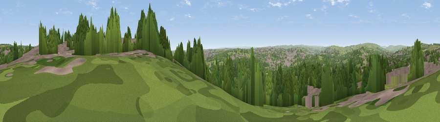

Viewpoint near Rawdon
#11104 in England · top 10% of its area beats it · near RawdonThe view, rendered

A 360° render of this exact spot computed from the terrain model, tree cover and land cover — summer colours, afternoon light, calibrated against photographs of famous viewpoints. Real trees, hedges and buildings will differ in detail.
The panorama
Grey silhouette: terrain skyline in each direction (720 bearings, Earth curvature and refraction included). Dashed green: skyline with trees (+15 m) and buildings (+8 m) as obstacles. Blue strip: how far the ground is visible on each bearing.
Where the view opens
Wedge length = distance to the farthest visible ground on that bearing (vegetation-aware). Rings at 10, 25 and 50 km.
What fills the view
43% woodland · 33% grassland · 24% built-up
Angular shares of the visible panorama (visual magnitude), not map area. Landscape diversity 0.48 (0–1 Shannon).
Key numbers
More beautiful places nearby
The staircase of upgrades: each row has a higher view potential than everything closer. Driving times are estimates from straight-line distance, calibrated against real road routing — check an actual route before setting out.
| Place | Direction | Drive | Score |
|---|---|---|---|
| Rawdon Billing | ENE · 1 km | ~2 min | 73.0 |
| Viewpoint near Otley | NNW · 5 km | ~10 min | 77.5 |
| Viewpoint near East Witton | N · 46 km | ~66 min | 77.8 |
| Hood Hill | NE · 51 km | ~72 min | 79.6 |
| Viewpoint near Thirlby | NE · 53 km | ~74 min | 81.5 |
| White Brow | WSW · 61 km | ~84 min | 82.9 |
| Beacon Hill | NNE · 65 km | ~88 min | 84.7 |
| Carlton Bank | NNE · 70 km | ~93 min | 85.1 |
53.85243, -1.68035 · source: screening · position refined by local search. Computed location — check access rights before visiting.